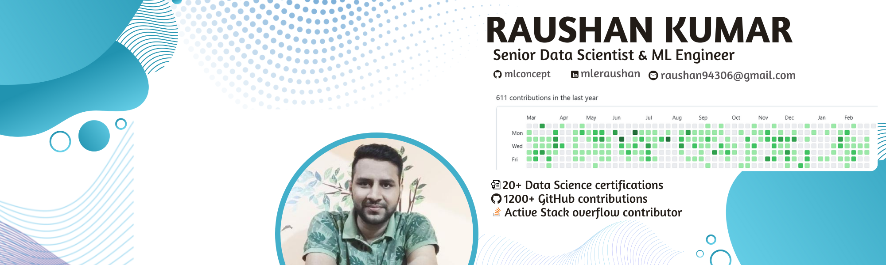

About
Principal ML Engineer with 9+ years of experience delivering production-grade AI, GenAI, and ML systems across Retail, CPG, and E-commerce. I turn complex data into scalable products — from RAG-powered bots and recommendation engines to campaign optimisation platforms recognised by AIM. Comfortable leading cross-functional teams, owning end-to-end ML pipelines, and driving measurable business outcomes.
- Website: www.raushanmle.github.io
- Phone: +91-8088566450
- City: Bengaluru, IN
- Experience: 8+ Years
- Degree: B.Tech (Gold Medalist)
- Email: raushanmle@gmail.com
+ Projects Delivered
+ Awards Won
+ Years of Experience
Technical Skills
- Programming & Query Languages: Python, SQL, R, Basic HTML
- GenAI & LLM Engineering: LLMs, Prompt Engineering, RAG Pipelines, LangChain, LlamaIndex, Vector Databases, LLM Evaluation, OpenAI APIs
- Machine Learning & Deep Learning: Feature Engineering, Time Series Forecasting, CNN, RNN, LSTM, OpenCV
- ML Engineering: Model Deployment, Model Monitoring, CI/CD for ML, Experiment Tracking (MLflow)
- API Development: FastAPI, REST APIs, Async Endpoints, Pydantic, Uvicorn
- Data Platforms & Databases: MS SQL Server, Hadoop, Hive, MongoDB, Azure Databricks
- MLOps & Orchestration: Kubernetes, Airflow, DevOps, GitHub, Azure DevOps
- Research & Optimization: Demand Transference, FI Impact, Nesting, Propensity Models, Optimization
- BI & Analytics: Power BI, Tableau, Excel
- IDEs & Tools: VS Code, Jupyter, PyCharm, Spyder, DBeaver, SQL Workbench/J, SSMS
Education & Certifications
B.Tech
2013 - 2017
SRM University, Chennai, India
Gold Medalist with a CGPA of 8.93 in Electrical and Electronics Engineering (EEE).
Intermediate
2011 - 2013
Shri Shankar College, Sasaram, India
Achieved distinction in Physics, Chemistry, and Mathematics (PCM) with an aggregate of 71.2%
Matriculation
2010 - 2011
BSEB, Patna, India
Achieved distinction in all subjects with an aggregate of 85.2%.
Data Science
2019 - Present
UNext For Enterprise, Bengaluru, India
Gained hands-on learning experience in data analysis, machine learning, and statistical modeling.
Generative AI for everyone
2024 - Present
DeepLearning.AI, CA, USA
The "Generative AI for Everyone" course provides an accessible introduction to the fundamentals of generative AI and its applications across various industries.
linkedin Learning
2020 - 2023
linkedin Learning Platform
Earned over 15 certifications through LinkedIn Learning.
Professional Experience
Principal ML Engineer
July 2026 – Present
Anheuser-Busch InBev, Bengaluru, IN
- Led end-to-end development of quantity and SKU recommendation using ML algorithms based on Genetic, Recursive solver, Gecko, reducing manual effort by 80% and turnaround time by 90%.
- Developed and optimized large-scale data engineering and ML workflows on Databricks, leveraging distributed processing and notebook orchestration for faster experimentation and production deployment.
- • Deployed scalable pipelines on cloud infrastructure with CI/CD and MLOps best practices.
Senior Data Scientist & ML Engineer
Oct 2023 – Present
Anheuser-Busch InBev, Bengaluru, IN
- Built CatExpert.ai, an AIM-recognised campaign optimisation platform that accelerated campaign planning 4× using advanced ML algorithms.
- Architected GenAI-powered bots (Query Resolver, Insights BOT, Dashboard Generator) using Azure OpenAI, RAG pipelines, FastAPI, and Kubernetes — reducing analyst dependency by ~40%.
- Led end-to-end delivery of Plano Principle Builder and Auto Plano Builder, applying LLMs and Genetic Algorithms to automate retail planogram generation at scale.
Data Scientist
Sept 2021 – Oct 2023
Anheuser-Busch InBev, Bengaluru, IN
- Built an AI-powered Beer Recommendation System delivering personalised portfolios — achieving $2B net revenue coverage and $80M revenue uplift.
- Developed FI Impact and Assortment Optimisation models using demand transference and propensity techniques, directly influencing SKU-level retail decisions.
- Partnered with cross-regional product teams to integrate ML outputs into production pipelines via FastAPI and Azure Databricks.
Associate Data Scientist
Oct 2020 – Sept 2021
Anheuser-Busch InBev, Bengaluru, IN
- Designed store-segmentation models using consumption and demographic data to classify outlets by revenue potential.
- Built ML classifiers to tag SKUs as revenue drivers, seasonal, or low-performing — enabling smarter assortment decisions.
- Automated data pipelines that reduced manual reporting effort by over 30%.
Lead Data Analyst
Jan 2019 – Oct 2020
Amazon, Bengaluru, IN
- Deployed an ML model to filter irrelevant search queries, reducing junk traffic by 60% and improving search quality at scale.
- Led a team of analysts; introduced Git-based version control and process automation that boosted team throughput significantly.
- Built Tableau dashboards for monthly and quarterly business impact reporting across the search quality programme.
Data Analyst
May 2017 – Jan 2019
Amazon, Bengaluru, IN
- Built an NLP-based ML model to auto-select the best XPath configuration from historical data, achieving ~4/20 correct XPaths without manual effort.
- Developed a Logistic Regression + Random Forest pipeline to classify product vs. junk URLs with >90% accuracy and coverage.
- Created an ensemble model (OpenCV + TensorFlow) for product page categorisation, achieving >95% accuracy across 80%+ of the catalogue.
Projects
Selected projects that demonstrate applied AI/ML, production-grade ML engineering, and measurable business impact. If you'd like details or to discuss collaboration, please get in touch.
Customer Query Resolver BOT
GenAI-powered BOT that guides new users through product features and error resolution, cutting onboarding time by ~30%.
Tech Used: Azure OpenAI, RAG, Docker, Python
Insights BOT
AI-powered self-service analytics BOT that answers natural-language queries over customer data, reducing data scientist dependency and accelerating decision-making.
Tech Used: Azure OpenAI, Docker, K8, Python, SQL DB
Dashboard Generator
BOT that auto-generates dynamic, real-time dashboards from customer data — enabling non-technical users to explore analytics without engineer involvement.
Tech Used: Azure OpenAI, Docker, K8, Python, SQL DB, Task-Queue management
Plano Principle Builder
GenAI-driven tool that converts business guidelines (shelf space, categories, inventory) into optimised planogram layouts — streamlining design and improving retail space utilisation.
Tech Used: Azure OpenAI, Docker, K8, Python, Task-Queue management
FI Impact of assortment
Analyses how assortment changes affect financial outcomes using demand transference and similarity models — helping retailers find the optimal product mix and maximise profitability.
Tech Used: Python, Demand Transfer, Similarity, Task-Queue management
Assortment Optimization
Optimisation engine that determines the ideal product mix for retail spaces by analysing purchase trends and inventory data — maximising revenue while minimising stockouts.
Tech Used: Python, Optimization, FastAPI, Nesting, Task-Queue management
Auto Plano Builder
Uses historical planogram data and GenAI-learned business principles with Genetic Algorithms to auto-generate optimised shelf layouts — reducing manual design effort significantly.
Tech Used: Python, FastAPI, LLM, Genetic Algorithms
Relevant Product finder
NLP-based text classification model that auto-searches failed customer keywords via Selenium and maps them to the most relevant product URLs — achieving >95% accuracy.
Tech Used: Python, Selenium, NLP, Text Classification
Failed Keyword Prioritization Model
ML model that analyses failed Amazon search keywords, separates junk from valid queries, and ranks the most impactful ones to fill catalogue selection gaps.
Tech Used: Python, NLP, SQL, Classification Modeling
Dashboard Automation
Deployed interactive Tableau dashboards for keyword trend analysis and team business impact reporting — automating legacy processes and significantly increasing team throughput.
Tech Used: Tableau, SQL, Excel, Dashboard Automation
Customer Recommendation Product
ML pipeline that learns from customer search behaviour to surface the most relevant and popular products in personalised recommendation feeds.
Tech Used: Python, Machine Learning, Recommendation System, Data Pipeline
Generalized Scraper
NLP-based ML model that selects the best XPath configuration from historical data for competitor scraping — successfully resolving ~4 out of 20 XPaths without manual effort.
Tech Used: Python, NLP, XPath, Web Scraping
Product URL prediction
Random Forest + Logistic Regression pipeline that classifies product vs. junk URLs using engineered features — delivering >90% accuracy and coverage.
Tech Used: Python, Random Forest, Logistic Regression, Feature Engineering
Product Categorizer
Ensemble model (OpenCV + TensorFlow) categorising products using both text attributes and images — achieving >95% accuracy across 80%+ of the product catalogue, fully automated.
Tech Used: Python, OpenCV, TensorFlow, Ensemble Learning
Image Text extraction
OCR-based model that extracts text from product images to enrich Brand data coverage and eliminate wrong brand tags — saving 0.5 FTE with >90% accuracy.
Tech Used: Python, OCR, OpenCV, Text Extraction
Best Model Selector
Decision-tree-based model selector that picks the best classifier (SVM, Logistic, etc.) per data point type and recommends the optimal XPath for competitor data extraction.
Tech Used: Python, SVM, Logistic Regression, Model Selection
Brand Page URL Validation
NLP classifier that uses self-scraped XPath features to distinguish brand pages from product pages — achieving >84% accuracy and coverage.
Tech Used: Python, NLP, XPath Scraping, Classification
Automatic Scrape Configuration generator
Click-to-train model that generates XPath scrape configurations from minimal user input — applicable to millions of pages and eliminating 1 hour of daily manual effort.
Tech Used: Python, XPath, Machine Learning, Automation
Recommendations
Feedback from colleagues and partners highlighting leadership, technical expertise, and impact. A few recommendations are shown below.
Let’s Connect!
Open to collaboration, consulting, and AI/ML partnerships. Reach out directly via phone, email, or social links.
Contact Details
I usually respond within 24 hours for relevant opportunities and collaboration requests.
Open to collaboration, consulting, and AI/ML partnerships across domains.